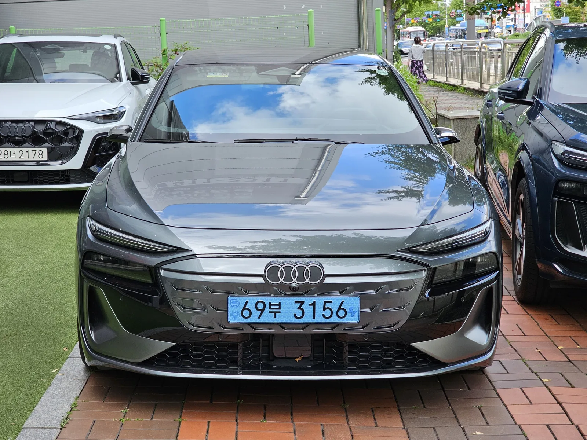
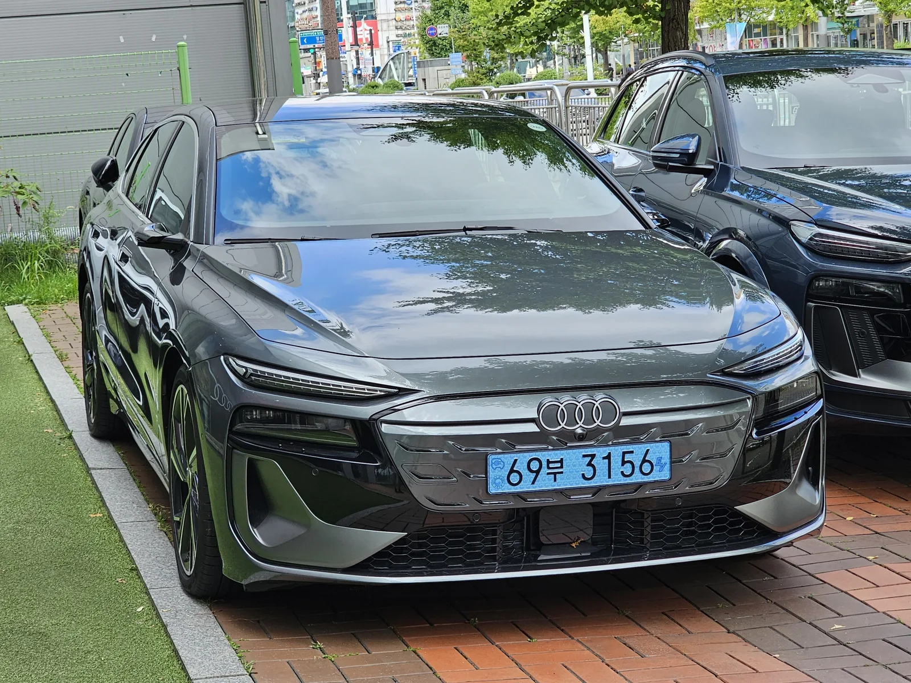
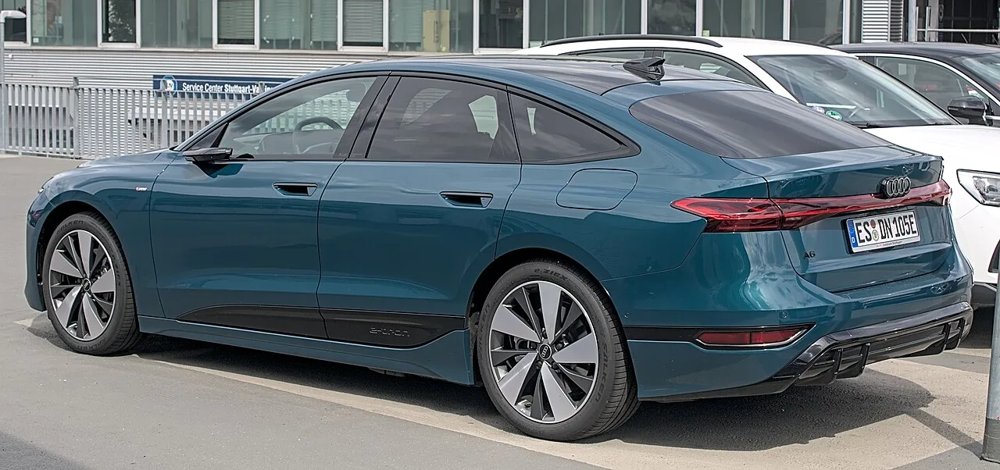
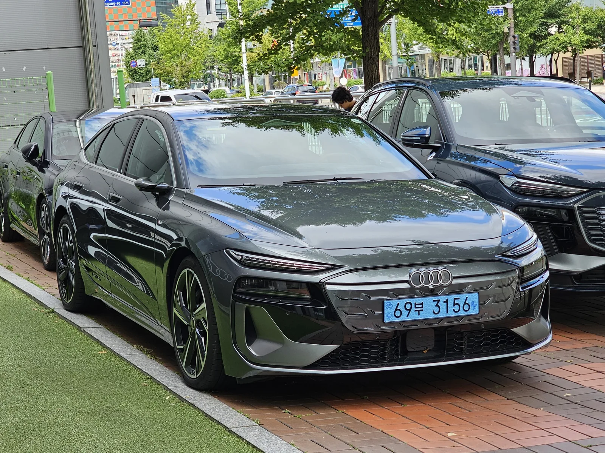
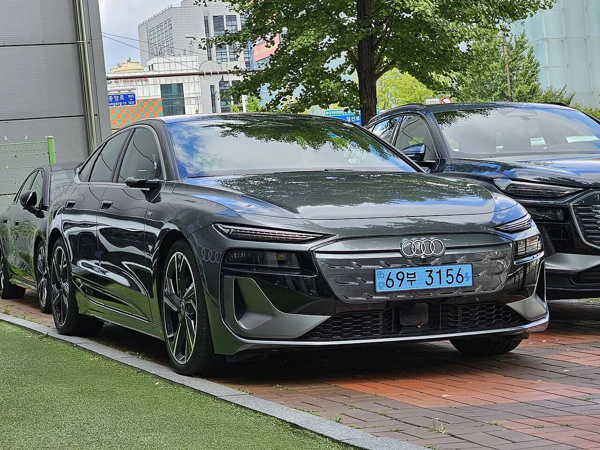

▲ 아우디 A6 스포트백 e-트론 퍼포먼스가 완충 1회로 1,338km를 주행하며 기네스 세계기록을 세웠다
1. 완충 1회로 1,338km… 공식 주행거리보다 72% 더 달렸다
아우디의 순수전기 세단 A6 스포트백 e-트론이 완충 상태로 1,338km(831마일)를 주행해 기네스 세계기록(Guinness World Records)을 새로 썼다. Carscoops와 InsideEVs 등 해외 매체 보도를 종합하면, 이번 기록은 '완전 충전 후 최장 거리를 주행한 프로덕션 전기차' 부문으로 기네스 공식 인증을 받았다. 이전까지 이 부문 최고 기록은 루시드 에어 그랜드 투어링이 세운 약 748.8마일(약 1,205km)이었다.
2. 누가, 어떻게 달렸나
기록에 도전한 인물은 현역 유럽 랠리 챔피언인 폴란드 출신 드라이버 미코 마르치크다. 그는 2026년 9월 11일 새벽 1시 55분, 폴란드 남부 타트라산맥 인근의 자코파네에서 시판되는 표준 사양의 A6 스포트백 e-트론에 올라 주행을 시작했다. 이후 비스와강을 따라 산도미에시(Sandomierz)·바르샤바(Warsaw)·토룬(Toruń)·그루지옹츠(Grudziądz)를 거쳐 발트해 연안의 헬(Hel)까지 북상한 뒤 같은 경로로 되돌아오는 왕복 코스를, 45시간이 넘는 시간 동안 달렸다. 산악 지형의 내리막 구간에서는 회생제동을 적극 활용해 배터리를 충전했고, 크라쿠프·바르샤바 등 대도시 구간에서는 출퇴근 시간대 정체 상황까지 그대로 겪으며 주행했다. 배터리가 완전히 방전된 지점은 토룬과 시에호추프 사이 구간으로, 주행은 여기서 최종 종료됐다.
도전은 통제된 트랙이 아니라 일반 차량이 오가는 공공도로에서 이뤄졌다는 점이 특징이다. 평균 기온은 섭씨 15도, 그루지옹츠 구간의 이른 새벽에는 낮게는 섭씨 7도까지 떨어지는 조건이었고, 마르치크는 효율을 극대화하기 위해 미쉐린의 저전비 타이어를 장착하는 등 세부 요소까지 준비했다. 그는 "폭스바겐그룹이 수년간 쌓아온 전기차 기술력이 최고 수준이라는 것을 이번 도전으로 증명하고 싶었다"고 소감을 전했다.

▲ A6 스포트백 e-트론은 낮은 무게중심과 0.21Cd의 공력 성능을 갖춰 장거리 주행에 유리한 구조를 갖고 있다 ⓒ Wikimedia Commons
3. 기록에 쓰인 차, A6 스포트백 e-트론 퍼포먼스
이번 기록에 쓰인 차량은 아우디 PPE(프리미엄 플랫폼 일렉트릭) 기반의 A6 스포트백 e-트론 퍼포먼스 트림이다. 후륜에 장착된 단일 모터가 362마력을 내며, 정지 상태에서 시속 100km까지 5.4초에 도달하는 성능을 갖췄다. 공기저항계수는 0.21Cd로 양산 세단 중에서도 손꼽히는 수준이다.
| 항목 | 수치 |
|---|---|
| 모터·출력 | 후륜 단일 모터, 362마력(hp) |
| 0-100km/h | 5.4초 |
| 배터리(총/순용량) | 100kWh / 94.9kWh 리튬이온 |
| 회생제동 | 최대 220kW(일상 제동의 약 95% 담당) |
| 공식 WLTP 주행거리 | 최대 약 777km(482마일) |
| 기록 주행거리 | 1,338km(831마일) · 완충 1회 |
| 평균 전비(기록 주행 시) | 7.09kWh/100km |
| 총 소요 시간 | 45시간 이상 |
| 공력 성능 | 0.21Cd |
배터리는 총용량 100kWh, 순용량 94.9kWh의 리튬이온 배터리가 탑재됐으며, 회생제동 시스템은 최대 220kW까지 감당해 일상 주행 제동 상황의 약 95%를 회생제동만으로 처리할 수 있다. 공식 WLTP 인증 주행거리는 최대 약 777km(482마일) 수준이다. 이번 기록 주행 거리인 1,338km는 이 공식치보다 약 72% 더 먼 거리로, 평상시 운전 습관으로는 도달하기 어려운 수치라는 게 매체들의 공통된 평가다.

▲ 리프트백 형태의 스포트백 차체는 낮은 루프라인과 매끈한 후면부로 공기저항을 줄여 장거리 주행 효율에 기여한다 ⓒ Wikimedia Commons
4. '실사용 최적화 주행'이라는 전제, 그리고 그 의미
📍 왜 공식 주행거리보다 훨씬 더 달렸나
기네스 기록용 주행은 연비를 최우선으로 하는 에코 드라이빙 기법이 총동원된 결과다. 저속 정속 주행, 급가감속 최소화, 내리막 회생제동 극대화, 타이어 공기압·접지저항 최적화 등이 복합적으로 작용했다. 마르치크 본인도 "평균적인 고속도로 운전자라면 감당하기 힘들 만큼 느린 속도로 달렸다"고 인정했을 정도로, 일반적인 실주행 환경과는 차이가 있다.
다만 이번 기록이 의미가 없는 것은 아니다. 통제된 테스트 트랙이 아닌 일반 공공도로에서, 실제 교통 상황을 그대로 반영해 이뤄진 주행이라는 점에서, 배터리와 파워트레인의 실사용 잠재력을 보여주는 사례로 꼽힌다. 신중한 우측 페달 조작과 인내심만 있다면 한 번의 충전으로 상당한 거리를 커버할 수 있다는 것을 실도로에서 입증했다는 평가다.
✅ 이번 기록의 핵심 포인트
· 완충 1회 1,338km(831마일) 주행, 기네스 세계기록 공식 인증
· 직전 최고 기록(루시드 에어, 약 1,205km) 대비 약 133km 경신
· 공식 WLTP 주행거리(약 776km) 대비 72% 초과 달성
· 통제된 트랙이 아닌 실제 공공도로·정체 구간에서 진행

▲ A6 스포트백 e-트론 퍼포먼스는 후륜 단일 모터로 362마력을 내며 0-100km/h를 5.4초에 주파한다 ⓒ Wikimedia Commons
5. 전기차 주행거리 경쟁, 왜 계속되나
완충 1회 최장 주행거리 기록은 최근 몇 년간 루시드, 메르세데스-벤츠, 아우디 등 프리미엄 브랜드들이 잇달아 도전해온 분야다. 배터리 용량 확대뿐 아니라 공력 설계, 회생제동 효율, 열관리 시스템 등 전기차 완성도를 종합적으로 보여줄 수 있는 지표이기 때문이다. 아우디는 이번 기록을 통해 PPE 플랫폼 기반 A6 e-트론의 배터리·파워트레인 효율성을 공개적으로 입증한 셈이다.

▲ A6 스포트백 e-트론은 국내에도 출시돼 판매되고 있는 양산 모델로, 이번 기록은 별도 튜닝 없는 표준 사양 차량으로 세워졌다 ⓒ Wikimedia Commons
다만 이 같은 기록 주행이 일반 소비자의 실제 주행거리를 대변하지는 않는다는 점은 유의할 필요가 있다. 실제 구매를 고려하는 소비자라면 공식 인증치인 WLTP 기준 약 776km를 기준으로 판단하는 것이 합리적이라는 게 업계의 조언이다.
▲ 아우디는 이번 기록을 통해 PPE 플랫폼 기반 전기차의 배터리·파워트레인 효율성을 입증했다 ⓒ Wikimedia Commons
6. 요약
아우디 A6 스포트백 e-트론 퍼포먼스가 완충 1회로 1,338km(831마일)를 주행해 기네스 세계기록을 세웠다. 이는 공식 WLTP 인증 주행거리(약 776km)보다 약 72% 더 먼 거리다.
현역 유럽 랠리 챔피언인 폴란드 출신 미코 마르치크가 45시간 넘게 실도로를 달려 이뤄낸 기록으로, 산악 회생제동·저전비 타이어 등 에코 드라이빙 기법이 총동원됐다. 통제된 트랙이 아닌 실제 교통 상황에서 달성했다는 점에서 배터리·파워트레인의 실사용 잠재력을 보여준 사례로 평가된다.